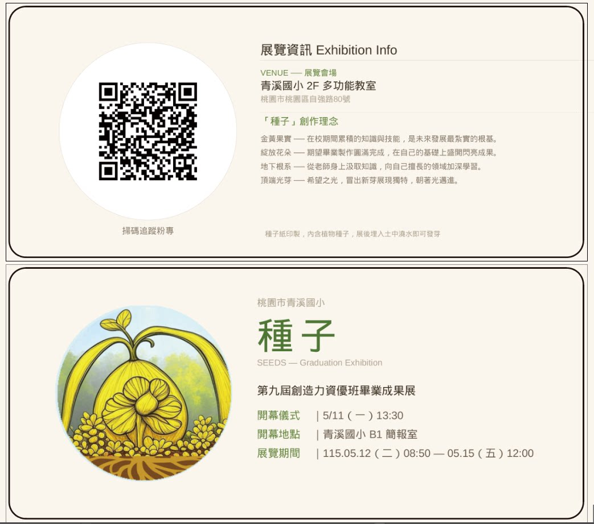

畢業成果展
青溪國小創造力資優班第九屆畢業成果展
第九屆畢業成果展邀請卡已公告，歡迎家長與師生一起來看見孩子的學習歷程與創作成果。
Qing Xi Elementary School
青溪國小創造力資優班Notices
畢業成果展
第九屆畢業成果展邀請卡已公告，歡迎家長與師生一起來看見孩子的學習歷程與創作成果。
Graduation Exhibition

歷史資訊
本年度國小資優鑑定報名與測驗已結束，以下時程保留作為查詢與回顧使用；後續資訊請以教育局與承辦學校公告為準。
鑑定網站
資優鑑定相關資訊可至 https://www.elemgiftedness.tyc.edu.tw/ 查詢。
已結束資訊
請於 115 年 1 月 6 日上午 9 時至 1 月 12 日下午 4 時完成線上報名。
創造能力初選為 115 年 3 月 21 日；一般智能初選為 115 年 3 月 22 日。
創造能力複選為 115 年 4 月 11 日；一般智能複選為 115 年 4 月 18 日至 4 月 19 日。
詳細時間
二年級初選為 115 年 3 月 22 日上午 9 時開始，請於 8 時 30 分前完成報到；四年級初選為 115 年 3 月 22 日下午 2 時開始，請於 1 時 30 分前完成報到。二年級複選為 115 年 4 月 18 日，四年級複選為 115 年 4 月 19 日，報到時間另於 115 年 4 月 16 日下午 5 時前公告。
二年級初選為 115 年 3 月 21 日上午 9 時 30 分開始，四年級初選為 115 年 3 月 21 日下午 1 時 30 分開始。二年級複選為 115 年 4 月 11 日上午 9 時 30 分開始，四年級複選為 115 年 4 月 11 日下午 1 時 30 分開始。